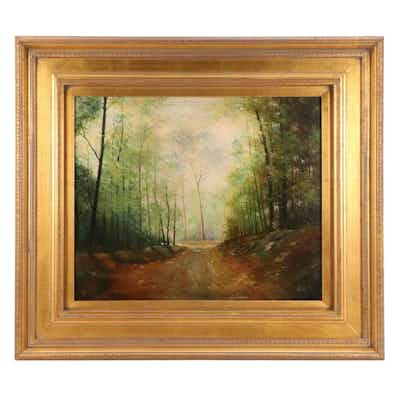

OUTPRICEDValentin Luminist-Inspired Oil Painting of Woodland Path
Decorative oil painting of a wooded/forest path in a Barbizon/Luminist-influenced impressi
22h left
Current bid$110 · 20 bids
Est. value$156
Your max bid$51
All-in at max$93
Projected close$209
Margin at bid−$6
Details & price history →